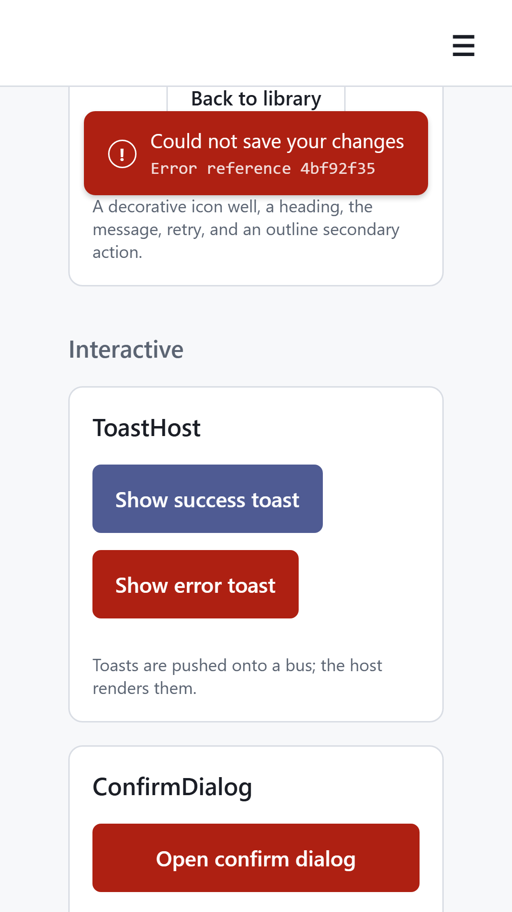
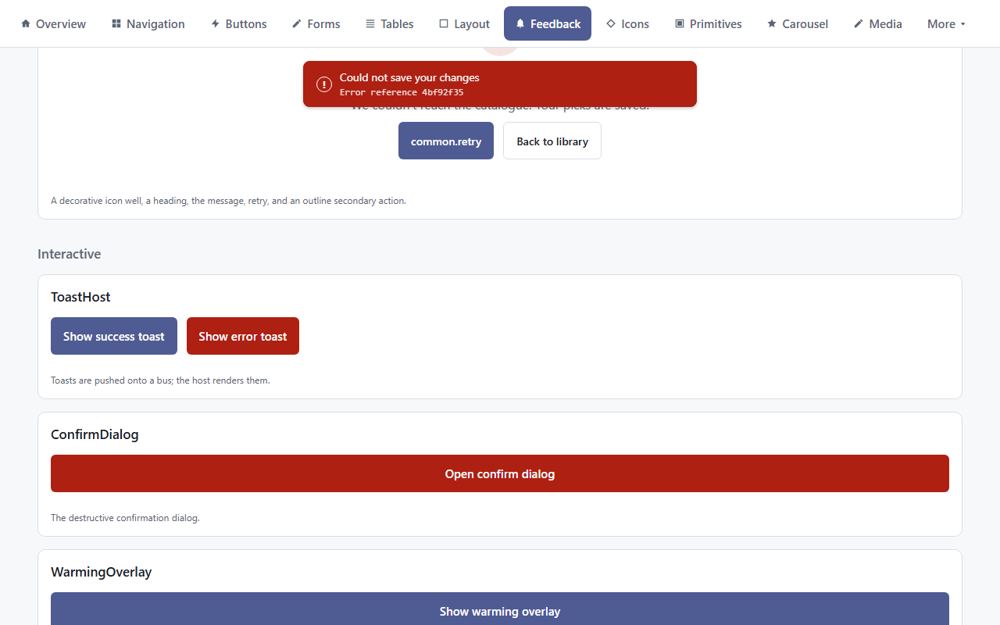
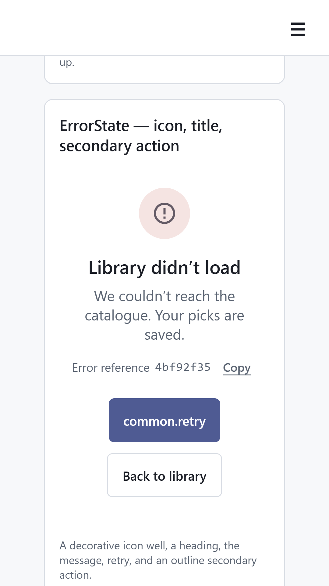
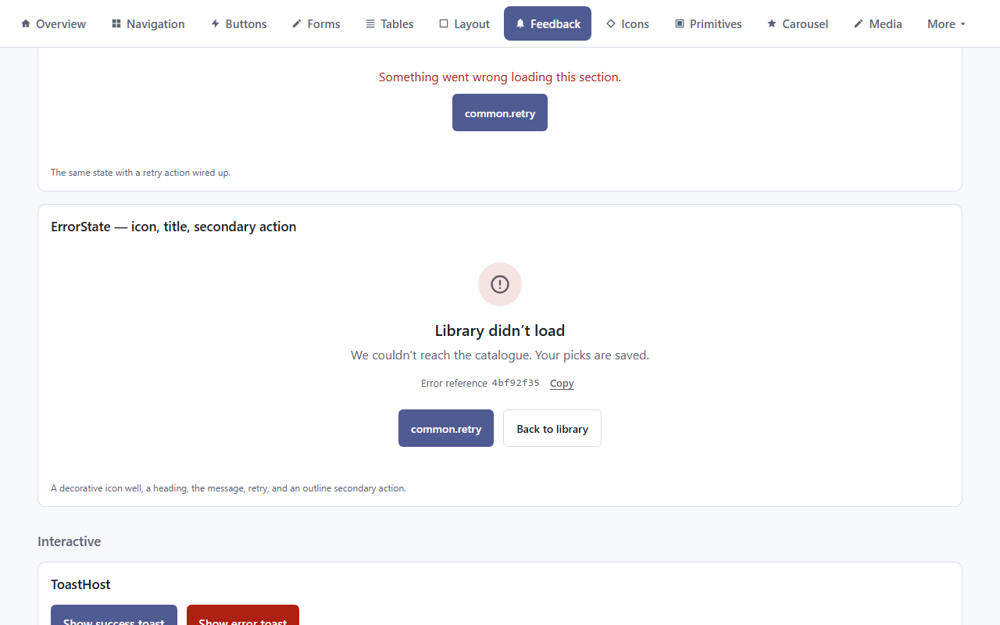
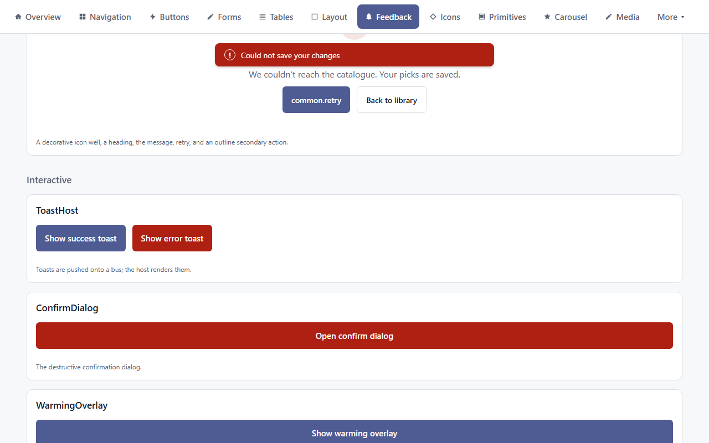
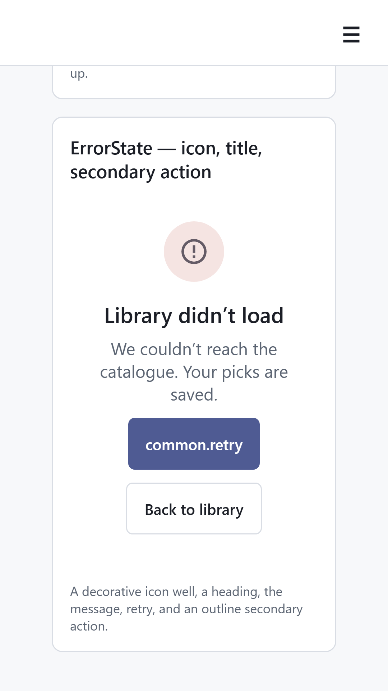
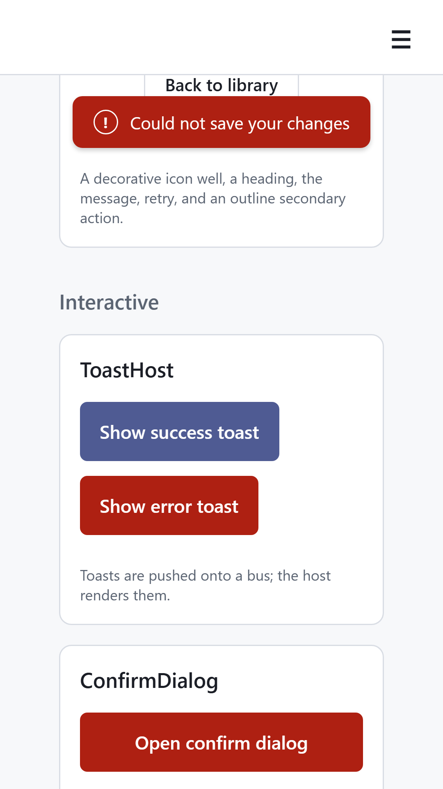
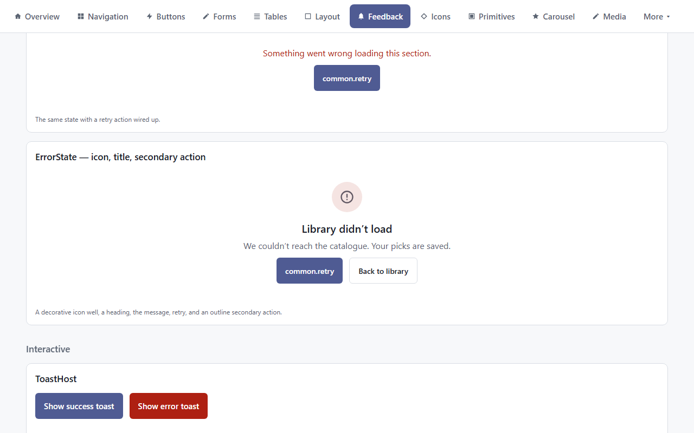
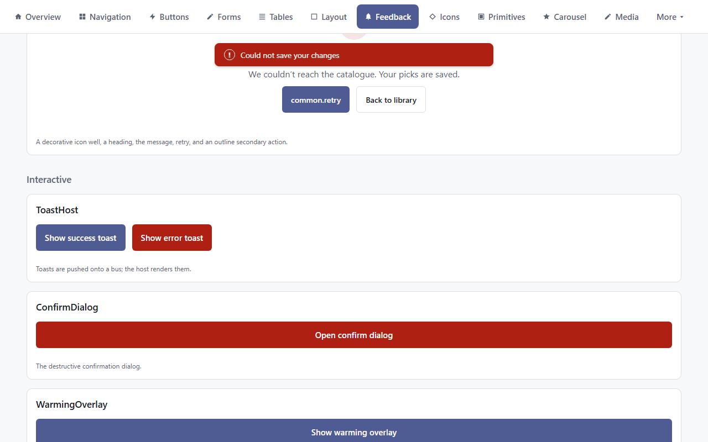

Where does "Error reference" show?
OBS-1 "Every app ships metrics, logs and alerts", W13-errref. @dloizides/bff-web-client 1.4.0 now carries the trace id on every failed request. Pick where the user sees it. Every option keeps the message, title, icon, Retry and Back to library exactly as they are today. Captures: live ui.dloizides.com/feedback (the shared @dloizides/ui-feedback 1.18.0 render), light mode, Galaxy S5 360x640 and desktop 1280x800; the after adds the option as a mock on the same live frame.
Q1 Where should the error reference appear?
- AEvery error message: full-page error states and error toasts
- BFull-page error states only; toasts stay as today
- CHidden: nothing on screen; support finds it in Grafana by time and user
Short form 4bf92f35 is shown; Copy copies the full 32-character id for support.
A. Every error message
Reference under the message on full-page errors, with Copy; a second line in error toasts.
Full-page error, 360x640


Error toast, 360x640


Full-page error, 1280x800


Error toast, 1280x800


B. Full-page errors only
Reference and Copy on full-page error states; toasts unchanged.
Full-page error, 360x640


Error toast, 360x640


Full-page error, 1280x800


Error toast, 1280x800


C. Hidden
No visible change. The id stays in the browser error log and Grafana; support searches by time and account.
Full-page error, 360x640


Error toast, 360x640


Full-page error, 1280x800


Error toast, 1280x800
